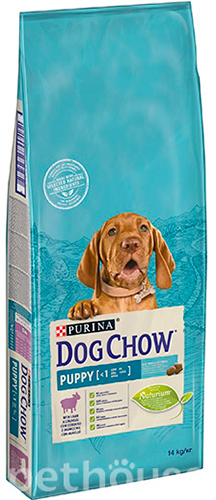

Dog Chow Puppy Lamb

Торгова марка - Dog Chow
Країна-виробник - Угорщина
Група -
Сухий корм
Вік собаки -
Для дорослих собак, для цуценят і юніорів
Клас корму - Преміум
Особливості потреби - Беременные и кормящие
Розмір породи -
Велика і гігантська, Середня, Мала
2,5 кг
449,34 Грн
12 кг
1918.82 Грн
Oпис
Dog Chow Puppy Lamb - розроблений для цуценят середніх і великих порода, для дорослих собак мініатюрних порід, а також для вагітних і годуючих сук. Високий рівень вмісту поживних і біологічно активних речовин задовольняє потреби цуценят в період інтенсивного росту (від 2 до 12 місяців), а також сук в період вагітності і лактації.
Чому Варто придбати?
- Високий вміст в кормі білка (28%) задовольняє специфічні потреби зростаючого організму, а також організму суки під час вагітності та годування.
- Задовольняє енергетичні потреби без збільшення обсягу корму завдяки оптимальному рівню жирів (14%)
- Незамінні жирні кислоти, що входять до складу корму, забезпечують хороший стан і розвиток шкіри та вовни, сприяють оптимальному розвитку сітківки для кращого зору, підтримують оптимальний розвиток головного мозку.
- Містить корінь цикорію - джерело речовин (пребіотиків), необхідних для росту корисної мікрофлори в товстому кишечнику, забезпечуючи тим самим здоров'я травної системи.
- Відрізняється унікальним комплексом вітамінів, які підтримують сильну імунну систему.
- Має спеціальну структуру гранул і складається з великих «Пентагон» (30%) і дрібних гранул (70%). Завдяки цьому собаки більш ретельно пережовують корм, забезпечуючи чистку зубів і масування ясен, що знижує рівень захворюваності зубів.